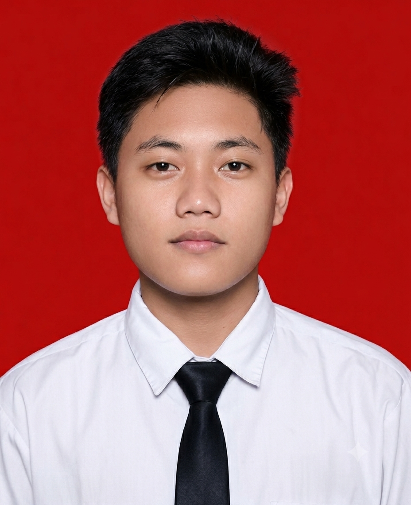

Stones Here Studio — Desain Logo
Desain branding untuk studio desain dan foto.
- Illustrator
- Brand Guideline
Saya Muhammad Rifqi Fauzan — mengerjakan desain grafis, tata letak, dan tampilan web menggunakan Adobe Illustrator, Photoshop, dan Canva, didukung pengalaman administrasi yang membuat setiap proyek berjalan tertata dari brief sampai file akhir siap pakai.

Saya memulai karier di bagian administrasi, tempat saya terbiasa bekerja rapi, teliti, dan tepat waktu. Dari situ saya menekuni desain grafis dan menemukan bahwa kedua hal itu saling melengkapi — desain yang bagus butuh proses kerja yang tertata di baliknya.
Sehari-hari saya mengerjakan identitas visual, materi promosi, dan tampilan web menggunakan Adobe Illustrator, Photoshop, dan Canva. Saya juga terbiasa mengatur dokumen, jadwal, dan arsip proyek, jadi klien tidak perlu khawatir soal revisi atau file yang tercecer.
Perangkat yang saya pakai sehari-hari, dari merancang visual sampai merapikan administrasinya.
Beberapa proyek yang mewakili cara saya bekerja — dari identitas merek hingga tampilan web siap pakai.
Merancang logo, palet warna, kemasan, dan materi promosi media sosial untuk kedai Ayam Mercon Bang Jago, lengkap dengan Design brief.
Tanggung jawab penuh atas pengelolaan dan efisiensi proses pengadaan barang perusahaan, mulai dari melakukan negosiasi harga dengan vendor, memelihara hubungan kerja sama yang baik, hingga memastikan seluruh material dan kebutuhan operasional tersedia tepat waktu demi kelancaran kegiatan produksi.
Menyediakan dukungan teknis menyeluruh terhadap infrastruktur perangkat keras dan lunak kantor, serta bertanggung jawab dalam pemeliharaan jaringan komputer, pemecahan masalah sistem, dan memastikan seluruh operasional teknologi informasi berjalan lancar tanpa hambatan.
Mengelola seluruh administrasi penjualan secara akurat, termasuk pencatatan pesanan, pengelolaan dokumen transaksi, serta penyusunan laporan harian dan bulanan guna mendukung pencapaian target tim sales serta memastikan pelayanan terbaik bagi pelanggan.
Sedang merancang sesuatu dan butuh orang untuk mewujudkannya? Kotak masuk saya selalu terbuka.
muhdrifqifauzan@gmail.com